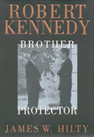

The relationship between a President and his 'tough as nails' alter ego and brother
The relationship between a President and his 'tough as nails' alter ego and brother


 The relationship between a President and his 'tough as nails' alter ego and brother
The relationship between a President and his 'tough as nails' alter ego and brother

|  |
Robert KennedyBrother ProtectorJames W. Hiltypaper EAN: 978-1-56639-766-7 (ISBN: 1-56639-766-9) |
"John and Robert Kennedy's close personal and working relationship was unique in the annals of American public service. James W. Hilty, focusing on Robert as 'brother protector,' has written a thorough, thoughtful account based on scrupulous research and a historian's search for the truth."
—Edwin Guthman, former press secretary to RFK and co-editor of Robert Kennedy in His Own Words: The Unpublished Recollections of the Kennedy Years
For most of his life, Robert Kennedy stood in the shadow cast by his older brother, John; only after President Kennedy's assassination did the public gain a complete sense of Robert ("Bobby," we called him) as a committed advocate for social justice and a savvy politician in his own right. In this comprehensive biography, James W. Hilty offers a detailed and nuanced account of how Robert was transformed from a seemingly unpromising youngster, unlikely to match the accomplishments of his older brothers, to the forceful man who ran "the family business," orchestrating the Kennedy quest for political power.
The centerpiece of this book is the remarkable political partnership that formed between Robert and John. As the manager of John's political campaigns, Robert proved himself "hard as nails" (in his father's admiring words), relentless in securing his brother's victory and unforgiving in overseeing his brother's presidency. Hilty marshals a great deal of evidence to show that while they did not always see eye to eye—Lyndon Johnson's selection as John's running mate being a notable disagreement—they discussed virtually every issue, gauging the likely political effects of every position. Robert was so close to the President that insiders called him "number one and a-half"; their consultations were so intimate that they spoke in a kind of code, barely intelligible to those around them. In Hilty's evocative but unsentimental recounting of the politcal crises of the Kennedy Administration, Robert and John prove to have been more calculating and astute leaders than today's pundits allow. Theirs was a partnership that was unprecedented and, thanks to an act signed into law by Lyndon Johnson, is never to be equaled.
Excerpt available at www.temple.edu/tempress
"James Hilty offers an important new study of RFK as lifelong defender and promoter of his brother, President John Kennedy. This fascinating, perceptive biography reveals a man struggling in his brother's shadow as he strives to confirm his own individuality as campaign manager, attorney general, and younger brother/confidant."
—Library Journal
"Robert Kennedy: Brother Protector is a splendid book. Hilty tells familiar stories with original interpretations, lacing his discussion with lucid tales of RFK's conflicts with Roy Cohn, Martin Luther King, Lyndon B. Johnson, and George Wallace. He challenges the myths and lore of the Kennedy past, from alleged voter fraud in Illinois to RFK's rumored affair with Marilyn Monroe.... The book will give pause to Kennedy admirers and detractors alike, for it is the most intelligently analyzed account of RFK to date."
—The Journal of American History
"A thousand and one Kennedy books are out there, one for every day of John F. Kennedy's mythical reign. But this one, written by a historian, actually provides a useful service. One of its main themes—am I truly my brother's keeper?—is timeless. And the other—exploring the obligations of the U.S. attorney general—is current."
—The Baltimore Sun
"Hilty offers an interesting take on a much-written-about chapter in U.S. history."
—Publishers Weekly
"The book's greatest strength is its straightforward, thorough examination of the major controversies surrounding John and Robert Kennedy."
—The American Historical Review
"...a highly recommended book."
—The Historian
Read a review from The Journal of American History, Volume 85.2 (September 1998), written by Paul R. Henggeler (pdf).
Read a review from The New England Quarterly, Volume 71.2 (June 1998), written by David Burner (pdf).
Preface
Introduction: Am I My Brother's Keeper?
1. The Seventh Kennedy
2. Farewells and Foreboding
3. "Yes, Dad. Yes, Dad."
4. Joe McCarthy and the Enemies Within
5. Investigating Racketeers
6. Winning Jack the Nomination
7. Electing Jack President
8. Justice in the New Frontier
9. Hoover and Bawdy Tales
10. Kennedy Aura and Kennedy Promises
11. The Cauldron of Civil Rights
12. Toward a Moral Commitment on Civil Rights
13. The Kennedys and King
14. "Number One and One-Half"
15. Missiles of October
16. Lest Darkness Come upon You
Epilogue: There Has to Be a Morning After
Notes
Bibliographic Essay
Chronology
Photograph Credits
Index
 | James W. Hilty, Professor of History at Temple University, has written extensively about the Kennedys including John F. Kennedy: An Idealist Without Illusion. He has also provided political commentaries for various publications including the Philadelphia Inquirer and served as historical consultant for an NBC News syndicated documentary, "Robert F. Kennedy: The Man, The Myth and the Memories," narrated by Tom Brokaw. |
History
Biography/Memoir/Autobiography
Political Science and Public Policy
© 2015 Temple University. All Rights Reserved. This page: http://www.temple.edu/tempress/titles/1347_reg.html.